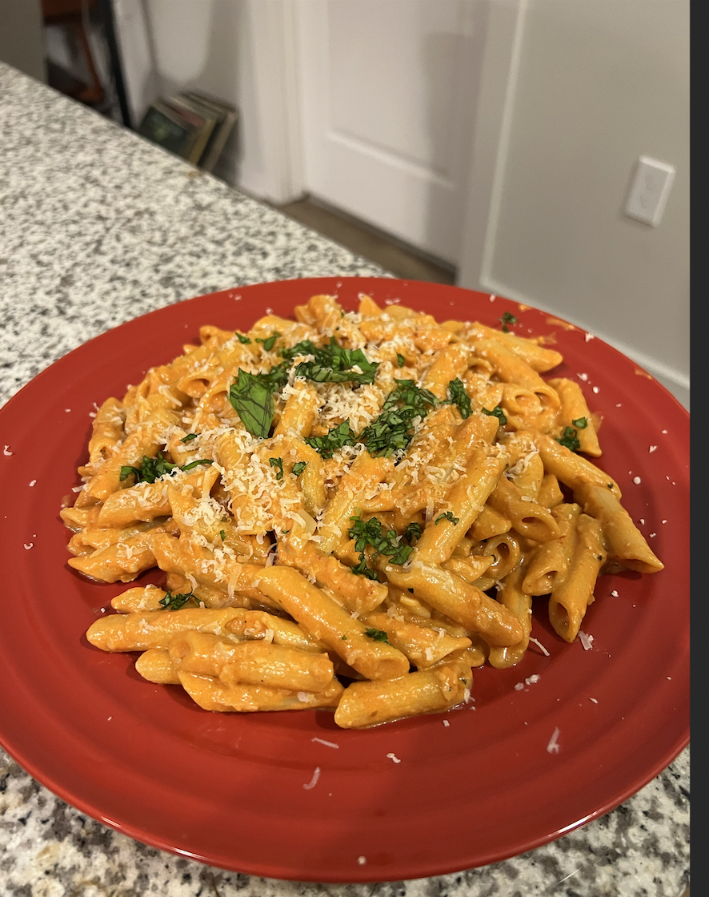

Penne Alla Vodka

About this recipe
Penne Alla Vodka is a creamy red sauce complex in flavor. The Vodka in this dish really brings out the flavor in
the tomatos and the red pepper flakes give this dish a plesant kick.
Ingredients
- Penne
- Tomato Psta
- Shallot
- Garlic
- Vodka
- Red Pepper Flakes
- Lemon
- Heavy Cream
- Salt
- Pepper
- Parmesean Cheese
- Fresh Basil
Steps
- Sautee shallot and garlic until garlic is fragrant
- Boil pasta till al dente and save salted pasta water
- Disolve tomato paste in vodka and add to garlic and shallots along with red pepper flakes
- Deglaze pot and mix ingrediants well
- Add salt and pasta water and let simmmer until reduced
- While simmering, add lemmon juice to taste
- Fold in heavy cream
- Add cooked pasta to pot
- Stir in parmasean cheese and basil
- Add salt and pepper to taste and serve warm